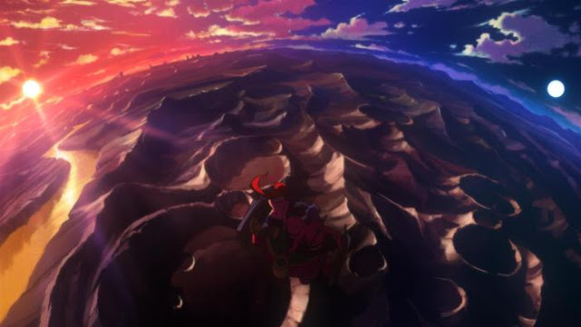
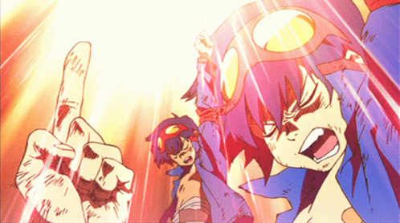
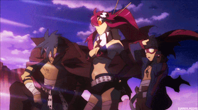
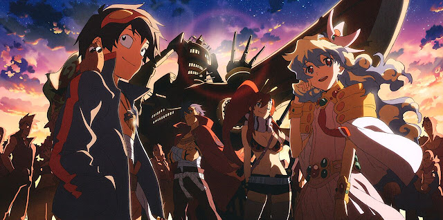
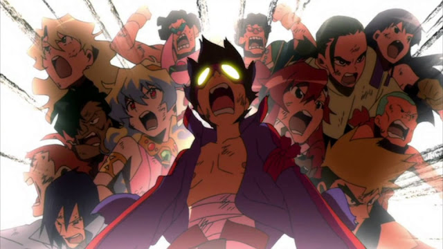
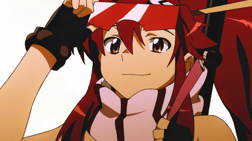

Gurren Lagann
A história de Gurren-Lagann se passa em um mundo distópico onde diversas guerras ocorreram em tempos passados ao ponto da humanidade retornar a um estado de vida decadente, morando em cavernas profundas as quais são chamadas de Vilas Subterrâneas. Foram tantos anos vivendo nesses lugares que as gerações atuais creem veemente que o mundo no qual vivem se restringe a essas cavernas (um mundo feito de tetos e paredes) e a ideia da existência de uma superfície é considerada um mito, para não dizer uma loucura. É em meio a este cenário que conhecemos Simon Jeeha, um simples garoto que trabalha como escavador para expandir sua vila (sendo que ele cava mais por diversão do que por obrigação).


Junto a ele conhecemos Kamina, seu "irmão mais velho", o qual está juntando um grupo de desordeiros para se mandarem da vila e partirem rumo a superfície, e este sempre puxa Simon para participar de suas tentativas malucas de escapar do lugar. No entanto, tudo muda na vida dos dois quando o teto da vila é completamente quebrado depois que um gigantesco robô com um semblante animal cai acidentalmente por lá. Nisso somos apresentados a Yoko Ritona, uma garota bem sensual com um enorme rifle que estava caçando o tal robô na superfície. Em meio a toda essa confusão, Simon resolve levar Kamina e Yoko até um pequeno mecha o qual ele tinha descoberto em uma de suas escavações, sendo que este reage misticamente a uma chave em forma de broca que ele havia encontrado momentos atrás. Motivado pelos discursos de Kamina (embora ainda meio temeroso), Simon resolve pilotar o pequeno robô que surpreendentemente consegue derrotar o mecha gigante e, de praxe, possibilita que os três finalmente possam ir para a superfície, onde muitos outros perigos inimagináveis os esperam.
Se tem algo que Gurren-Lagann fez com maestria foi o desenvolvimento e carisma de cada um de seus personagens, em especial dos três protagonistas. Enquanto que em Evangelion você não consegue se apegar a nenhum dos personagens principais, por vezes chegando a ter raiva deles (em resumo Shinji é um chorão, Asuka é uma esnobe e Rei é praticamente uma porta), em Gurren-Lagann você não só se afeiçoa a cada um dos personagens centrais do anime (alguns até mais do que o esperado) como também compra a jornada e objetivo de cada um deles. Logo de cara muitos irão se afeiçoar bastante ao Kamina: Ele é um personagem altruísta, corajoso, ativo, teimoso e que tem uma capacidade inacreditável de fazer com que suas palavras venham a se concretizar. Ele é um dos poucos personagens que viu a superfície quando criança e está em uma jornada para encontrar o seu velho pai (o qual disse a Kamina que o estaria esperando nesse mundo aberto quando ele estivesse pronto). Simon, por outro lado é completamente o oposto do Kamina: quieto, temeroso, passivo, medroso e que tem uma grande dificuldade em acreditar no seu próprio potencial, algo que Kamina sempre o incentiva a correr atrás. No entanto a medida que o anime avança, o personagem vai tendo um bom desenvolvimento até se tornar o protagonista de respeito que a obra exigia.


Já Yoko é a contra-balança entre esses dois: é uma personagem altamente independente, corajosa e linha-dura, mas ao mesmo tempo cautelosa, solidária e bastante amável. Não há como não se apaixonar por ela. Acreditem! É uma garota de beleza tanto externa quanto interna, e que busca fazer da superfície um lugar melhor para a humanidade. Além disso há vários outros personagens cativantes como o inquieto Kittan e suas irmãs enfesadas da Black Kinsmen, o cauteloso Rossie com os pequenos Gimmy e Darry, o inteligentíssimo Leeron que ajuda os heróis com toda a parte tecnológica e o sagas Viral que assume o posto de rival do Kamina. Certamente você se apegará bastante a eles (se bobear, talvez até a alguns vilões). Quanto a ambientação e cenários, Gurren-Lagann é extremamente colorido e vibrantes. Lembram-se da arte espiral e paisagismo usando contrastes de cores citado a cima? Tudo na obra remete a este conceito, desde as escavadeiras nos robôs quebrando obstáculos até os aspectos mais admirável em um céu estrelado (tanto que alguns podem até ter a sensação de estarem assistindo a uma versão em anime de Guardiões da Galáxia). Inclusive o mundo pós-apocalíptico e os seres por vezes espalhafatosos que o habitam mescla perfeitamente com quais quer possibilidades de ideias que Nakashima quisesse inserir na obra, fazendo do "absurdo" algo extremamente agradável e crível nesse universo (só pra ter uma noção das bizarrices, os mechas tem rostos em seus peitorais), sem falar de toda ação frenética com lutas colossais e explosões multicoloridas que o anime trás. Em suma é um verdadeiro show visual.
Gurren-Lagann, além de ser uma obra fantástica, também traz diversas questões filosóficas e significativas. Inicialmente o anime apresenta conceitos da famosa alegoria da "Caverna de Platão", com os habitantes da vila subterrâneas sendo a representação de prisioneiros (tanto da caverna quanto de suas próprias crenças populares) e Kamina assumindo o papel de libertador (o qual é tido como louco por muitos por crê na existência da superfície). Os próprios nomes dos protagonistas remetem a analogias bíblicas, já que Simon vem de Simão (também conhecido como São Pedro), o qual guiou os apóstolos de Cristo após sua ascenção aos céus (algo que remete bastante a jornada do personagem), enquanto que Kamina vem da palavra Kami (ou Kami-Sama) que significa Deus ou Todo-Poderoso, o qual condiz muita a figura do personagem.


Além disso, a obra possui uma mensagem muito profunda: Você é capaz de tornar os seus desejos possíveis. Simon é constantemente incentivado a crer nas suas capacidades de realizar grandes feitos, e não apenas ele como os demais personagens ao decorrer da história mostram seus valores diante de situações alarmantes. Gurren-Lagann explora a questão da determinação humana dentro de um universo de possibilidades assombrosas, pois é um dos poucos animes que não traz mutantes, alienígenas altamente poderosos ou super-seres para proteger a fraca humanidade, mas sim a própria humanidade se mostrando incrivelmente forte e poderosa diante dos mutantes e seres cósmicos, mostrando que nós humanos, mesmo frágeis e cheios de limitações, podemos alçar grandes conquistas em níveis colossais. Ainda há muitas questões embasadas no anime, mas em suma isso é Gurren-Lagann, uma obra que fará você rir, chorar, se impressionar e gritar de euforia do começo ao fim, e que certamente ficará eternizada no coração dos fãs de longa data e das futuras gerações que também o abraçarão.